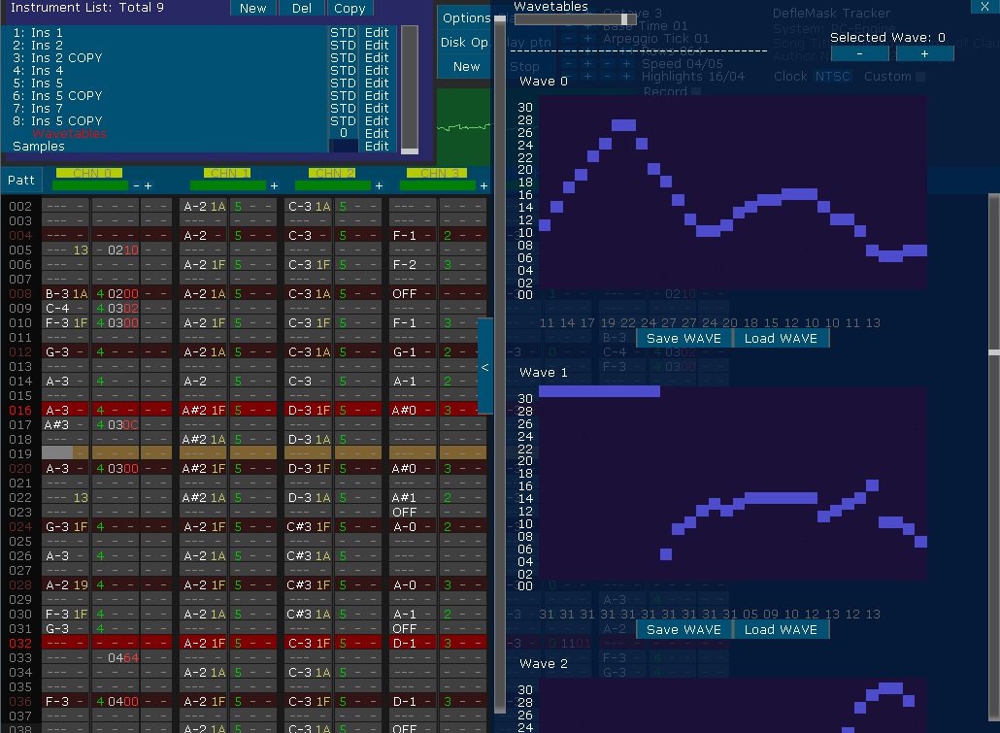

PC-Engine/TurboGrafx-16 SYSTEM INSTRUMENTS EDITOR MENU:
You can control the PC-Engine sound using STD Instruments, you can set a Volume Macro, an Arpeggio Macro, and a Waveform Macro.

And in order to define the shape of the WAVE channel you have to use the WAVE Editor. You can use more than 1 WAVEFORM, and in order to switch between WAVES you could use the "Selected WAVE" display in the top part of the window, you can also change the selected wave in the instrument list, you have to use the 10xx effect to switch them while a song is playing.
You can use Samples in PC-Engine too, by setting the 17xx effect to 1 in any channel. Remember that the PC-Engine's Channels depth is of 5bits only, so you have to load and done your 8bit samples keeping in mind this.